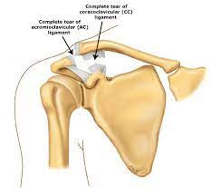

Shoulder Separation

CAUSES
Most shoulder separations are caused by falling directly onto the shoulder with enough force to tear ligaments. Besides falls, car accidents and sports injuries are frequent causes.
SYMPTOMS
- Pain at the very top of the shoulder.
-
A bump on the top of the shoulder at the end of the collarbone. As a result of torn ligaments, the shoulder blade moves downward from the weight of the arm, causing the top end of the collarbone to protrude up.
DIAGNOSIS
- Review of current symptoms and appearance of the injured shoulder.
-
Review of medical history.
-
A physical examination.
-
Imaging tests such as X-rays, ultrasound and MRI (magnetic resonance imaging). The patient may be asked to hold a weight in the hand during these tests to make the injury stand out more on the images that are captured.
TREATMENTS
Most people will recover from a separated shoulder within two to 12 weeks without surgery. Non-surgical treatments include the following:
- Use of a sling to keep the shoulder in place while healing.
-
Ice packs and medications such as ibuprofen, naproxen, aspirin or acetaminophen to reduce pain.
-
Physical therapy or an exercise program to strengthen the muscles and ligaments of the shoulder once it has healed. A doctor’s approval should be received before starting a rehabilitation program.
-
Avoidance of lifting heavy objects for eight to 12 weeks after the injury has healed.